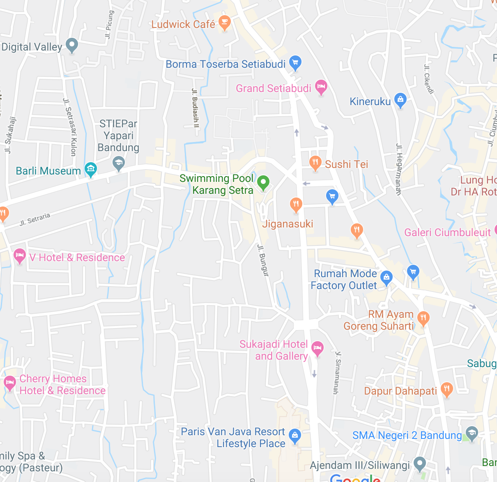

Dr. Mariana Albuquerque
Sobre
Dra. Mariana Albuquerque é psicóloga clínica formada pela Universidade de São Paulo (USP), com mais de 3 anos de experiência no acompanhamento de adultos, adolescentes e jovens adultos. Especializada em saúde mental, ela atua no desenvolvimento de estratégias terapêuticas personalizadas para lidar com ansiedade, depressão, estresse, conflitos familiares e desafios de relacionamento. Sua abordagem é centrada no indivíduo, combinando técnicas da Terapia Cognitivo-Comportamental (TCC), psicoterapia humanista e mindfulness, visando promover autoconhecimento, resiliência emocional e qualidade de vida. Mariana acredita que cada pessoa possui recursos internos para superar suas dificuldades, e seu papel como psicóloga é orientar e apoiar esse processo de transformação de forma acolhedora e segura. Além das consultas presenciais, oferece atendimento online, facilitando o acesso à terapia para quem busca cuidado emocional com flexibilidade e conforto. Sua prática é guiada pelo respeito, empatia e ética profissional, sempre com foco no bem-estar e crescimento pessoal de cada paciente.Especilidades
- Terapia Cognitivo-Comportamental (TCC)
- Psicoterapia Humanista
- Mindfulness e Técnicas de Atenção Plena
- Saúde Mental de Adolescentes e Jovens Adultos
- Gestão de Conflitos Familiares e Relacionais
- Transtornos de Ansiedade e Depressão
- Apoio a Desafios Emocionais do Dia a Dia
- Atendimento Online e Presencia
- Promoção de Qualidade de Vida e Bem-Estar
Informações do Paciente
Localização
Depoimentos
O atendimento foi transformador. Passei por um período de depressão e não tinha condições financeiras para buscar ajuda particular. Encontrar esse serviço foi um divisor de águas na minha vida.

João Santos
45 anos
Sempre achei que terapia fosse algo distante da minha realidade. Com o apoio acessível que encontrei aqui, consegui iniciar meu processo de autocuidado e hoje me sinto muito mais preparada para lidar com a ansiedade.

Maria Oliveira
32 anos
Eu tinha preconceito com terapia, achava que não era para mim. Hoje, depois de algumas sessões, percebo como é importante falar sobre o que sentimos e buscar orientação profissional.

Rodrigo Almeira
39 anos